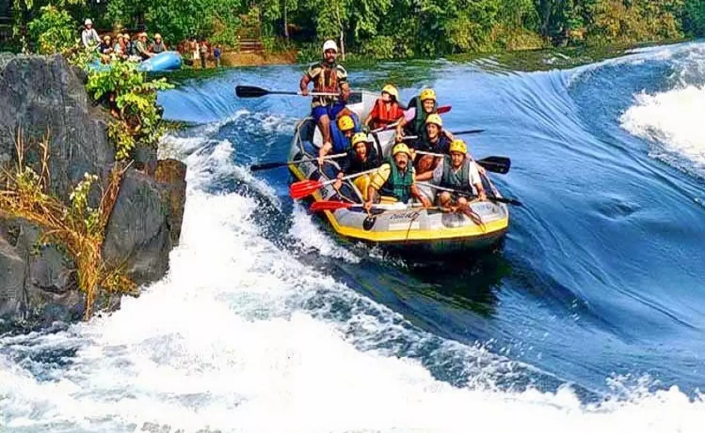
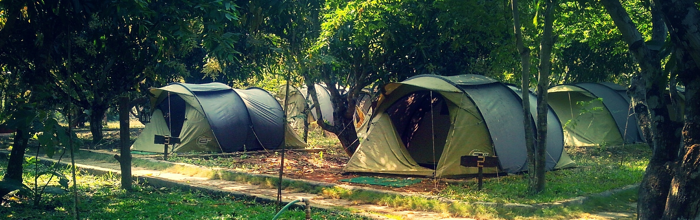

|  |
Undulating streams, whispering bamboo, diverse wildlife, and innumerable trekking trails make Dandeli a dream destination. River Kali and its tributaries, Kaneri and Nagajhari, meander through the moist deciduous and semi-evergreen forests. The Dandeli forests also play host to the graceful Virnoli Rapids, the magnificent Supa Dam, the sinister Syntheri Rocks, Nagajhari Viewpoint, the Kulgi Nature Education Camp, Sykes Point which offers a stunning view of the Kalinadi Valley, and the Kavla Caves with their Shivling-like stalagmites. The Kavla caves are located in the Dandeli sanctuary, 28km from the town of Dandeli. Embedded in the rocks on the ridge overlooking the Kali river valley, these natural caves were created by water seeping through porous rocks over millions of years. There are two ways to approach Kavla caves. Your first option is to ascend a roughly-hewn stairway of 1000 steps after crossing the Kali river stream near the Nagjhari Power Station at Ambikanagar. The other route is through the Dandeli game sanctuary via Panasoli village. The view of the river valley from Kavla caves is breathtaking. Though the cave is about 15 ft. high, its mouth is only three feet in height. You will need to use a powerful flashlight to explore these caves as they are pitch dark. After you crawl on your hands and knees for about 30 ft., the roof opens to a height of about 10 ft. A few more steps lead you to a mammoth Shivling-like stalagmite. The area surrounding it has been converted into a sanctum sanctorum and is maintained by a priest who is only present for a brief time each day. During the Maha Shivarathri festival, this cave is electrically lit to play host to a jatra that takes place here. Moving deeper into the cave, you will see some stalactites and a small finger-like stalagmite. The entrance and the exit of these caves are in the form of an inverted "U" with doors at both ends.
